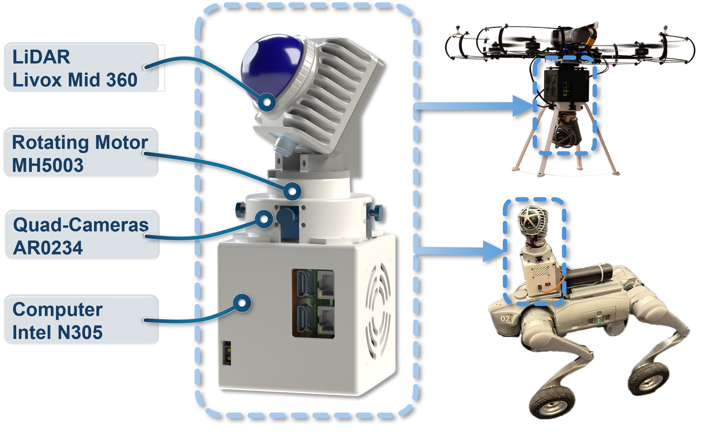

Panoramic 3D perception is crucial for safety monitoring and autonomous operation in industrial scenarios, requiring full-field coverage while maintaining geometric consistency and real-time performance.
S3KF presents a unified panoramic 3D multi-object tracking framework that fuses an electric rotating LiDAR with a four-camera array for synchronous full-surround geometry and appearance perception.
Unlike traditional 2D trackers that suffer from panoramic image projection singularities or 3D trackers relying on redundant Euclidean parameterization, S3KF designs a geometrically consistent state representation on the unit sphere S².
Experiments in controlled and real-world industrial scenes show that the method achieves decimeter-level tracking accuracy, significantly reduces identity switches, and maintains real-time performance on-board, providing a scalable, infrastructure-free solution for industrial safety monitoring and panoramic multi-object tracking.
Key Features & Contributions
🔧 Panoramic Sensing Hardware
A novel integrated system of rotating LiDAR and quad-camera rig, realizing full panoramic 3D coverage and synchronized multimodal sensing.
🌐 S² Geometric State Representation
2-DOF tangent-plane parameterization on unit sphere, avoiding redundant constraints and enabling unified 2D/3D tracking representation.
📡 Extended Spherical Kalman Filter
Augmented state space with scale/depth and their velocities, enabling principled camera-LiDAR data fusion via an extended spherical Kalman filter.
📊 Infrastructure-Free GT Acquisition
Novel 3D trajectory GT method with wearable LiDAR, releasing an open-source dataset with synchronized multimodal data and high-precision GT.
System Overview
Hardware Setup: Rotating Livox Mid360 LiDAR + 4-channel fisheye camera array + embedded computing unit.
The system supports 360° panoramic sensing and can be mounted on UAVs, quadruped robots, and mobile platforms for infrastructure-free multi-object tracking.

Real-world Experiments
Panoramic 3D Tracking: S3KF is validated in indoor, outdoor, dynamic and complex environments.
It achieves centimeter-to-decimeter localization accuracy and drastically reduces ID switches compared with 2D trackers like ByteTrack.
Conclusion
S3KF provides a unified framework for panoramic 3D multi-object tracking by introducing spherical geometry and multi-modal fusion.
It effectively addresses projection distortion, state redundancy, and unstable filtering in traditional methods, enabling robust, real-time, infrastructure-free panoramic perception for robotics and industrial applications.